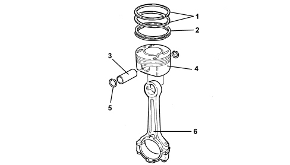

INTRODUCTION - PISTONS AND CONNECTING RODS
- Path
- Descriptions > 10 ENGINE > 1028 PISTONS AND CONNECTING RODS > INTRODUCTION - PISTONS AND CONNECTING RODS
- Kind
- system description
- Applies to
- engines: 1.8; all production periods
- Interactive page
- https://sloeber94.github.io/elrnDB-fCrm/en/#/194002153
Applies to: engines: 1.8; all production periods
SPECIFICATIONS
The pistons are made from silicon aluminium alloy and are divided into three size categories with an arrow stamped on the crown that should be pointing towards the timing to ensure correct installation.
The piston crown is flat with four grooves to prevent interference with the valve heads.
The lower part of each cylinder liner/bore contains a jet that sprays oil onto the piston crown to cool it and to ensure the gudgeon pin is lubricated.

1. Piston rings
2. Oil scaper ring
3. Gudgeon pin
4. Piston
5. Piston rings
6. Connecting rod
The connecting rods are made from hardened and tempered steel produced through hot pressing. The connecting rod caps are the fracture type joined by pressure using bolts, together with the half-bearings. The pistons and small ends are connected by means of a bush and pin kept in place by two circlips.
Since the connecting rod caps are produced by facture, each cap matches perfectly with the connecting rod that it comes from. When refitting the connecting rod caps, each cap must be matched with the connecting rod to which it belongs in order to prevent damage due to the imperfect matching of the surfaces.
When fitting the piston, the reference on the lower part of the connecting rod indicates the side that should be facing the flywheel.